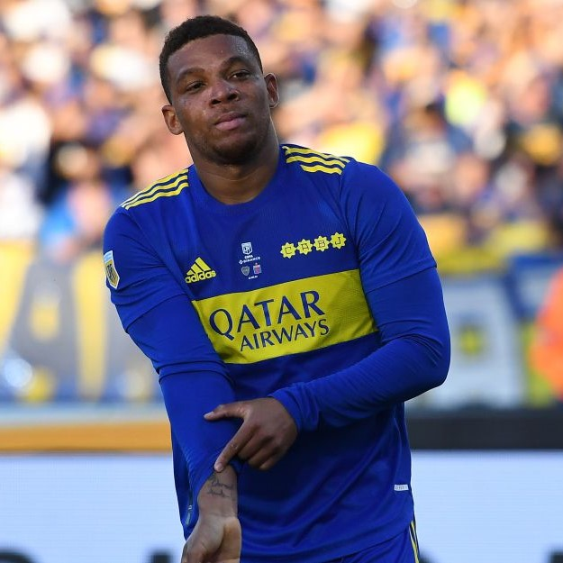

Volver al Inicio <-
Frank FabraFrank Yusty Fabra Palacios (Nechí, Antioquia, Colombia; 22 de febrero de 1991) es un futbolista colombiano nacionalizado argentino que juega como lateral Izquierdo y su actual equipo es Club Atlético Boca Juniors. Además, es internacional con la Selección de Colombia. |
 |
Fabra surgió profesionalmente en la cantera del Envigado F. C., haciendo su debut oficial el 22 de julio de 2010 contra el Cúcuta Deportivo con solo 18 años. Con velocidad, gambeta, cambio de ritmo y mucha proyección al ataque; Fabra se ganó la titularidad en la "naranja mecánica" a su corta edad. En el 2012, Fabra disputó 3 partidos con su equipo de la Copa Sudamericana, siendo titular en los tres encuentros. En el 2014, Fabra sería cedido al Deportivo Cali, llegando así a 106 partidos y 3 goles en 5 temporadas con el equipo naranja.
El 24 de enero de 2016 firmó su contrato con el Boca Juniors de Argentina por 3 años y medio, tras haber comprado este equipo el 50% de su pase.
Su debut oficial sería el 14 de febrero en la derrota por la mínima frente a Atlético Tucumán en La Bombonera, saliendo a los 44 minutos por lesión. El 20 de abril convierte su primer gol en el club frente al Deportivo Cali por la Copa Libertadores 2016. El 12 de mayo convierte un gol muy importante de visitante para Boca en la Copa Libertadores 2016 frente a Club Nacional. Siete días después, por la vuelta de los cuartos de final, patea de forma "Maradoniana" el quinto penal de la serie, en la que Boca terminaría clasificando. Se ganó totalmente el cariño de los hinchas y algunos hasta lo llaman en forma de broma "Fabradona", recordando aquel penal pateado de forma exquisita por Diego en las semis del Mundial 90.
El 11 de septiembre de 2016, por la fecha 3 del Campeonato de Primera División 2016-17 (Argentina) convertiría el tercer y último gol del partido ante Belgrano en La Bombonera, con un resultado que terminaría en 3 a 0 a favor de los locales.
Cuando comienza la temporada 2017/18 tras la finalización del préstamo de Jonathan Silva y ante la ausencia de un lateral izquierdo indiscutido en el club dirigido por Guillermo Barros Schelotto, Fabra se gana la titularidad oficialmente en la primera mitad de la temporada. Anteriormente disputaba la titularidad con el marcador argentino, siendo pieza fundamental en el ataque del equipo y utilizado en los partidos donde se necesitaba mayor ataque que marca. Marcaría el cuarto gol de Boca en la victoria 0-4 sobre el Club Atlético Vélez Sarsfield por la cuarta fecha de la Superliga Argentina.
El 11 de febrero del 2018 le da la victoria a Boca por la mínima sobre CA Temperley. El 9 de mayo de 2018 ganaría la Superliga 2017-18 con el equipo, Frank fue importante para el bicampeonato del club. El 16 de mayo de 2018 marcó el segundo en la goleada 5-0 sobre Alianza Lima por Copa Libertadores consiguiendo el pase del partido ante Belgrano en La Bombonera, con un resultado que terminaría en 3 a 0 a favor de los locales.
En marzo del 2021 se coronaría campeón con Boca, ganando la Copa de la Liga Profesional 2020, este sería su quinto título con el Xeneize. En octubre de ese mismo año marcaría en la victoria de Boca frente a Godoy Cruz, dedicándole el gol a su padre. Más tarde, en noviembre, también anotaría para el club de la ribera en la victoria de Boca frente a Sarmiento de Junin. A fines de ese mismo año ganaría su sexto título con Boca, la Copa Argentina 2019-20.
A inicios del 2022, en febrero, marcaría su decimocuarto gol con el Xeneize, por la Copa de la Liga Profesional 2022 frente a Rosario Central.
El 22 de mayo de 2022, Fabra, disputó la final de la Copa de la Liga Profesional 2022, frente a Tigre, logró convertir el 2-0 con un tiro desde afuera del área que pegó en el primer palo. El partido terminó 3-0 y este fue el séptimo título de Frank con la camiseta del Xeneize. Con este gol también se convirtió en el lateral izquierdo con más goles (16) en la historia de Boca Juniors.